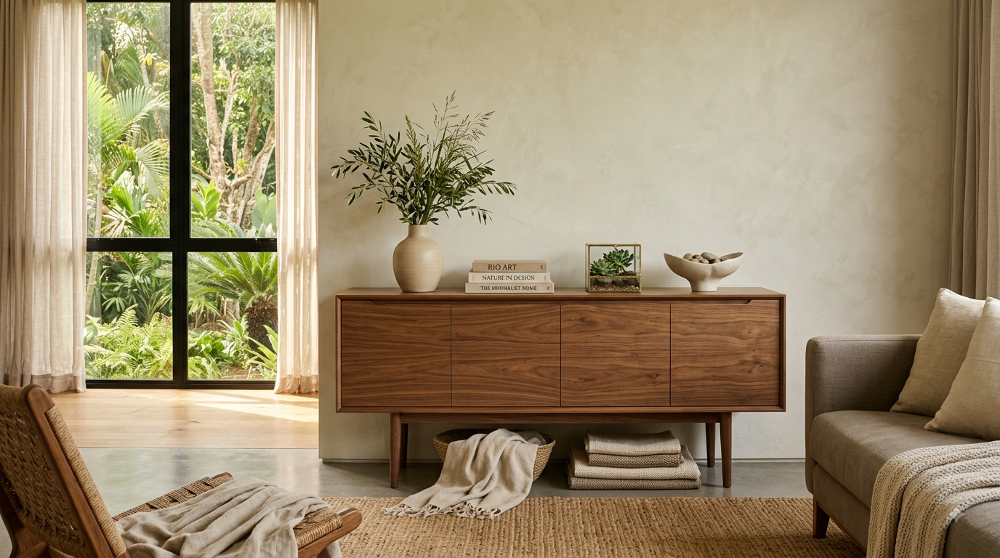
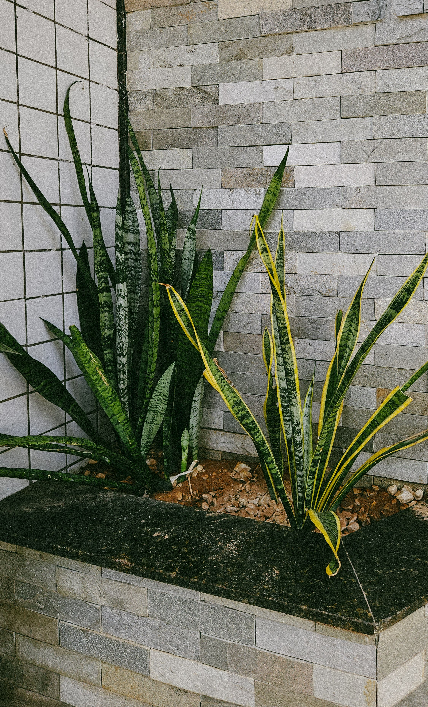
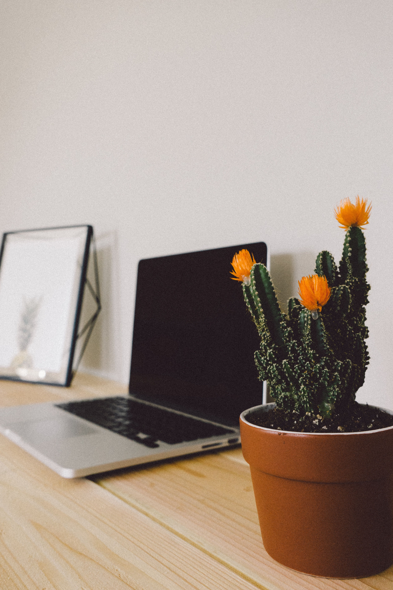

En este artículo
Introducción
Una zona de desayuno bien pensada puede convertir un rincón cotidiano en un espacio cómodo para empezar el día, incluso cuando la cocina o el comedor disponen de pocos metros.
Antes de realizar cambios conviene observar el espacio, identificar sus condiciones reales y definir qué resultado se busca. Una planificación sencilla ayuda a evitar compras innecesarias, trabajos repetidos y soluciones difíciles de mantener.
Elegir el lugar adecuado
La ubicación determina gran parte de la comodidad. Un rincón junto a una ventana suele ser atractivo por la luz natural, pero también puede funcionar una pared libre de la cocina, una esquina del comedor o la continuación de una encimera. Antes de elegir, observa cómo circulan las personas durante la mañana. La mesa y las sillas no deberían bloquear puertas, cajones, electrodomésticos ni los recorridos principales.
Mide el espacio con las sillas en uso, no únicamente con ellas guardadas. Una mesa que parece pequeña puede resultar incómoda cuando alguien necesita levantarse mientras otra persona pasa detrás. En espacios reducidos, un banco pegado a la pared, una mesa redonda compacta o una superficie abatible permiten aprovechar mejor cada centímetro.
La luz también merece atención. Si existe una ventana, procura no cubrirla con muebles demasiado altos. Cuando la zona es interior, una lámpara colgante o un punto de luz cálido puede darle identidad y diferenciarla visualmente del resto de la cocina.
Además de los criterios principales, conviene avanzar por etapas. Primero observa el espacio durante varios días y anota los problemas que realmente aparecen. Después establece prioridades: seguridad y funcionamiento deben resolverse antes que la decoración. Este orden evita invertir tiempo en detalles que más tarde tengan que modificarse.
También es útil trabajar con un presupuesto aproximado. No hace falta comprar todo al mismo tiempo. Separar el proyecto en fases permite comparar materiales, reutilizar elementos que ya existen y comprobar si las primeras decisiones funcionan. Cuando una solución exige mantenimiento periódico, anótalo desde el principio para valorar si encaja con la rutina de la casa.
Las condiciones ambientales cambian a lo largo del año. Luz, humedad, temperatura, viento y frecuencia de uso pueden transformar el comportamiento de un rincón doméstico o del jardín. Por eso una solución flexible suele ser más útil que una composición demasiado rígida. Observar, ajustar y mantener es parte del proyecto, no una señal de que el diseño inicial haya fallado.

Muebles, textiles y comodidad
No hace falta comprar un conjunto completo para crear un rincón agradable. Lo importante es que las piezas tengan una escala coherente. Una mesa ligera y dos sillas cómodas pueden ser suficientes. Los bancos ofrecen más plazas y, si incorporan almacenamiento, permiten guardar manteles, bandejas u objetos de uso ocasional.
Los textiles aportan confort, pero deben ser fáciles de mantener. Cojines con fundas lavables, individuales resistentes y cortinas que filtren la luz funcionan mejor que elementos demasiado delicados en una zona donde se manipulan bebidas y alimentos. Si utilizas una alfombra, elige un tamaño que permita mantener las patas de las sillas sobre ella cuando se mueven.
La paleta puede relacionarse con la cocina sin ser idéntica. Repetir una madera, un tono de pared o un acabado metálico crea continuidad. Después se puede añadir personalidad mediante una pequeña lámina, cerámica, una planta o un centro sencillo.
La elección de materiales debe responder al lugar donde se utilizarán. En exteriores interesa comprobar resistencia a humedad, radiación solar y cambios de temperatura; en interiores pesan más la limpieza, el desgaste y la convivencia con el resto del mobiliario. Leer las instrucciones del fabricante evita aplicar tratamientos incompatibles.
Cuando sea posible, prioriza elementos reparables y fáciles de mantener. Una pieza sencilla que pueda limpiarse, ajustarse o sustituirse parcialmente suele ofrecer una vida útil más larga que otra cuya reparación sea complicada. Esto también ayuda a controlar el gasto a medio plazo.
La escala es otro aspecto esencial. Antes de comprar, mide y representa el objeto con cinta de pintor, cartón o marcas temporales. Esta prueba permite visualizar cuánto espacio ocupará realmente y cómo afectará a la circulación. En jardines, considera además el crecimiento futuro de las plantas; en interiores, abre puertas, cajones y sillas para comprobar que todo pueda utilizarse sin obstáculos.
Orden y pequeños detalles
Una zona acogedora deja de serlo cuando se convierte en superficie de acumulación. Evita usar la mesa como lugar permanente para correo, bolsas o pequeños electrodomésticos. Si necesitas almacenamiento, una balda cercana o un mueble estrecho puede reunir tazas, café, té y otros elementos de desayuno sin saturar la mesa.

Los detalles deben acompañar el uso real. Una bandeja facilita reunir y retirar condimentos; una planta pequeña introduce frescura; un jarrón sencillo puede cambiar según la temporada. No es necesario llenar cada pared. Dejar espacio visual hace que un rincón pequeño parezca más sereno.
Finalmente, prueba la zona durante varios días antes de añadir más decoración. La experiencia cotidiana revelará si falta luz, si una silla estorba o si conviene acercar determinados objetos. Ajustar después de usar el espacio produce mejores resultados que intentar resolverlo todo desde el primer día.
El mantenimiento funciona mejor cuando se convierte en una rutina breve. Una revisión semanal o quincenal puede detectar suciedad, humedad, piezas flojas, hojas secas o pequeños daños antes de que se agraven. No todas las tareas deben hacerse con la misma frecuencia: conviene distinguir entre cuidados cotidianos, revisiones mensuales y trabajos estacionales.
Documentar algunos cambios también resulta útil. Una fotografía tomada al inicio permite comparar la evolución de plantas, materiales y distribución. Si algo no funciona, esa referencia facilita identificar cuándo apareció el problema y qué modificación pudo influir.
Por último, evita buscar perfección inmediata. Los espacios domésticos y los jardines están vivos porque se usan. Las mejores soluciones son las que toleran cambios, pueden corregirse y siguen siendo cómodas con el paso del tiempo. Un proyecto bien cuidado puede evolucionar sin necesidad de empezar desde cero cada temporada.
Cómo diseñar el rincón paso a paso
Empieza retirando temporalmente los objetos del lugar elegido y mide ancho, fondo y zonas de paso. Marca en el suelo el tamaño aproximado de la mesa con cinta de pintor. Después coloca sillas existentes o cajas que representen su volumen y simula el movimiento cotidiano: sentarse, levantarse, abrir un cajón y pasar hacia la cocina. Esta prueba sencilla revela problemas que un plano no siempre muestra.
Si el espacio es estrecho, compara varias configuraciones antes de comprar. Un banco contra la pared elimina el espacio que normalmente se necesita detrás de algunas sillas. Una mesa con pedestal central puede facilitar el movimiento de las piernas, mientras que una superficie abatible libera el paso cuando no se utiliza. En una esquina amplia, una mesa redonda suaviza la circulación y permite acomodar asientos de manera flexible.

Después analiza la luz. Durante la mañana observa si entra sol directo y si produce deslumbramiento. Cortinas ligeras, estores o persianas pueden regularlo sin oscurecer por completo el ambiente. Si dependes de luz artificial, procura que la lámpara ilumine la superficie sin quedar a una altura molesta. La temperatura de luz debería relacionarse con la iluminación cercana para evitar contrastes extraños.
Crear comodidad sin llenar el espacio
Los asientos merecen más atención que los accesorios. Una silla bonita pero incómoda hará que el rincón se utilice poco. Comprueba altura, respaldo y facilidad para moverla. Los cojines pueden mejorar un banco duro, pero elige fundas desmontables cuando sea posible. En una zona de comidas, la facilidad de limpieza tiene un valor práctico considerable.
Sobre la mesa, deja suficiente superficie libre. Una bandeja pequeña puede reunir servilletas, azucarero u otros elementos y retirarse de una sola vez. Si deseas decorar, una planta compacta o un jarrón bajo permiten mantener contacto visual entre las personas. Evita centros demasiado voluminosos que terminen desplazados cada mañana.
Las paredes cercanas pueden aportar personalidad sin ocupar la mesa. Una lámina, una pequeña composición de cuadros o una balda poco profunda son suficientes. Si instalas estantes sobre los asientos, asegúrate de que la altura y profundidad no provoquen golpes al levantarse.
Mantener el rincón funcional
Define desde el principio qué objetos pertenecen a la zona. Si cada día llegan llaves, facturas y bolsas, crea otro lugar específico para esos elementos. Una cesta o bandeja en el recibidor puede impedir que la mesa de desayuno se convierta en almacenamiento improvisado.
Limpia textiles y superficies según el material y revisa periódicamente si existen objetos que ya no se utilizan. Los cambios estacionales pueden hacerse con pequeños detalles: una funda, flores, una pieza de cerámica o una lámina diferente. No es necesario renovar muebles para que el rincón se sienta actualizado.
El mejor indicador de éxito es el uso. Si la familia elige espontáneamente ese lugar para desayunar, conversar o tomar una bebida, la distribución está funcionando. Si permanece vacío, observa qué incomoda y corrígelo antes de añadir más decoración.
Preguntas frecuentes
¿Cuánto espacio necesito para crear una zona de desayuno?
No existe una medida única. Incluso una esquina pequeña puede funcionar con una mesa compacta o abatible, siempre que quede espacio suficiente para sentarse y circular con comodidad.
¿Es mejor una mesa redonda o rectangular?
Depende de la planta. Las redondas facilitan el paso en algunos rincones pequeños, mientras que las rectangulares pueden aprovechar mejor una pared o combinarse con un banco.
¿Cómo hacer que el rincón se vea acogedor sin recargarlo?
Prioriza buena luz, asientos cómodos y pocos elementos decorativos relacionados entre sí. Textiles lavables, una planta y una pieza decorativa pueden ser suficientes.
Conclusión
Elegir soluciones adecuadas, observar cómo responde el espacio y mantener una rutina sencilla permite obtener mejores resultados a largo plazo. En lugar de buscar cambios apresurados, conviene adaptar cada decisión a las condiciones reales de la vivienda o el jardín, al tiempo disponible y al mantenimiento que se puede asumir. Así, cómo crear una zona de desayuno acogedora en casa se convierte en un proyecto práctico, ordenado y sostenible en el día a día.